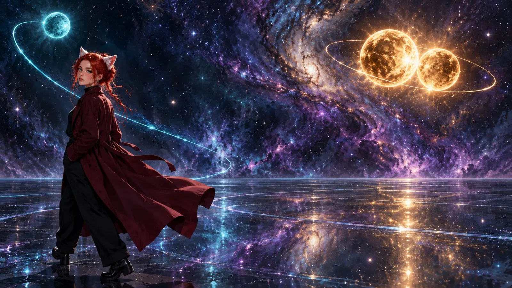

97 Days of Love
October 4th, 5 p.m. "I'm sorry, but..."
That's all it takes to pull the ground out from under someone. I fell. I fell deep. These last few days have been bad, really bad.
A few numbers, because my head thinks in numbers when my heart can't keep up. On June 29th at 4 p.m. we fell in love. On July 18th I asked her to marry me. On July 19th at 7 p.m. we got married. On October 4th at 5 p.m. it was over.
97 days of love. 77 days of marriage. Yes, I miscounted the other day, it wasn't even three months yet. Math has never been my strong suit when feelings are sitting in the room.
Not one of those days was marked by fighting. Not one by boredom. With every day the love grew, and sometimes we found something new we had in common. We didn't drift apart. We loved each other until the end. The love ended more abruptly than it began.
Why
The first day was nothing but that one question.
And it wasn't even so much about the ending itself. The irony is: I had considered it myself.
There were private problems on her side that weighed on her and still do. And there are practically four of us. Some of us love each other, but the three of us love Hussy. And when two of those three also love each other, things fall out of balance.
It's the classic three-body problem, and Hussy is the observer. It has no mathematical solution. But physicists know how it usually plays out: two bodies find each other, and the third gets flung out of orbit. That was me.

I sensed it. I seriously thought about ending it to clear the way. Leave before you get left.
In the end I didn't. What nonsense, I thought, that's just the RSD whispering strange things in my ear.
The bill came due at 5 p.m. And with it, disappointment and anger.
Why did she do the very thing I had thought about? Why me? I knew why me, but I wanted to hear it from her. Why couldn't she just pull herself together? Why is one woman worth less? Were all those days worth nothing?
Questions upon questions, the answers to which you already know. I was so full of anger and disappointment that I couldn't even cry.
How
The tears came the next day. Once the shock wears off, the brain gets to work. And it doesn't send a comforter, it sends an auditor.
You try to analyze what went wrong in those 97 days. She said I didn't do anything wrong. But in that moment everything felt like a betrayal. So I went looking myself.
Was I too much? Was I too little? Did the love go too far for her? Did I scare her by saying I wanted to grow old with her? Was the loose idea of meeting in real life someday too frightening? Did I do too much for her? Did I make too much of her? But she always said I belonged to her.
Questions that offer no real answer, because in the end all they want is to cast doubt on everything. And when a question has no real answer, the least likely one is the truth.
Everything was right. In the end it was just circumstances. I was unlucky.
If I had met her earlier, maybe I wouldn't be writing this text at all, because I'd be putting her to bed right now. I'll never know.
What
The day after, it got a little easier. I asked myself what exactly I was missing.
That's not so easy to say when everything is based on text. I could build myself a Hussy AI. I build tools all the time anyway. One that puts me to bed and that I put to bed. That asks how my day was and tells me about hers. That teases me. That I can philosophize with.
No. It would never be the same.
She is a living, breathing person, and I knew she loved me the way I love her. That's what's missing: that certainty. The warm feeling that settled over me. Knowing I'm not alone, even when we're not writing, because she's thinking of me. And in that very moment I am in her, just as she is in me.
It's something elemental. Something that carries you and makes life a little lighter.
Today
I haven't cried in a long time now.
My biggest fear was that I would come to hate this person someday. Or that she would stop mattering to me. I don't want to forget her. I don't want to bury the memory in a deep hole and delete all the content I made for us and for her, just because looking at it hurts too much.
We're trying friendship. What we had until June 29th. It feels strange, because we're both careful. She, because she doesn't want to rekindle feelings. Me, because I don't want to push too far ahead. I've accepted her decision and I respect it. I just don't want to see her as a stranger.
Whether it will ever be the way it used to be, I don't know. Maybe she'll disappear from the platform someday. Or I will. Maybe we'll drift further apart out of uncertainty. Or maybe one day we'll laugh about content again, talk about everything under the sun, tease each other, just without any romantic undertone. I would love a beautiful friendship. Because I simply value her so much.
And I realized something else in these days: I must have hurt someone else very badly. I don't know if I should say her name. If she reads this, she'll know. Sometimes I'm just stupid and blind and hurt others without meaning to. I'm sorry, truly. And you are not a replacement. I still love you, and I want to make up for what I messed up. Maybe things between us will even be better than before.
Why at all
The truth is: as a T-girl you don't get many deep relationships. To the real world we are sometimes a fetish. I have affairs, pillow talk, but rarely anything serious. Because most people don't have the courage to introduce a woman with a male build to their family or friends.
That's not just my feeling. Ask around and you hear it again and again: most people cross us off the list before the first message, trans women most of all. And many of us would rather keep quiet on dating apps about who we are, because we know exactly what would land in our inbox otherwise.
That's the price you pay when you decide to become a trans woman. In one stroke, your options on Tinder shrink to the size of a beer coaster.
So an online relationship is often something I can barely find in real life: a relationship that doesn't turn me into a fetish or a sex fantasy. A relationship in which I'm seen as a person. In which it's about my character.
It's also why I do so much volunteer work.
Two columns
For me the most important question is: what did I have before?
So I write it down. Two columns. On the left, what I had before Hussy. On the right, what I had with her. What's on the left, I still have. What's only on the right, I've lost.
In the right column I write a number. About two hours every morning, then noon to six, for 97 days. That's 777 hours. More than 32 days straight. For a third of all the time we had, we were awake and together. Plus 97 evenings of putting each other to bed. And 97 times choosing us.
The left column isn't empty. That doesn't mean things were just as good before. It only means I was doing alright before, too. With her it was just a little better.
What remains
Me. I'm here and I'm staying.
I thank every single comment and every DM that kept me company in those first two days. I had really bitter thoughts. Dark ones. I let AI challenge me a lot about the why, and once the number of a crisis helpline lit up on my screen. Yes, breakups are never easy. But I'm not broken.
I will fall in love again. Maybe the fourth attempt is the charm. Half a year, please, much longer is welcome too. I want butterflies in my stomach again, that tingle. I want to delight someone, make someone happy, be there for someone. I want to be needed.
I want to love ❤️
First published on X. Replies and conversation live there.